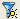

Some selections are duplicated in the View > Tree Options and Highlight menus. The options available for sorting results depend on the results tab that is selected, as shown in Figure 1.
Highlighting color scheme — See “Setting Highlight Color in Calibre RVE for LVS, PERC, and PEX” for complete information.
Setup Highlight Filters  — Opens the Highlights Tab for specifying layer, device, and area filters for highlight actions. The icon is blue when a highlight filter is active and gray when no filter is active.
View By options — Sorts results as indicated. A detailed description of the available selections for the tree options is given in the following tables: